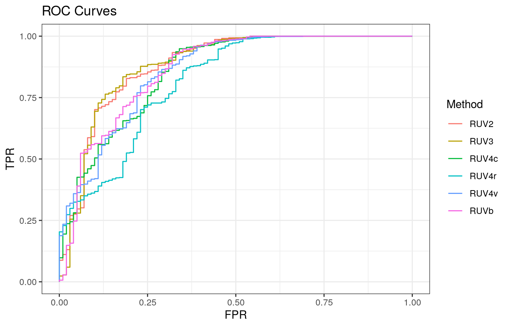
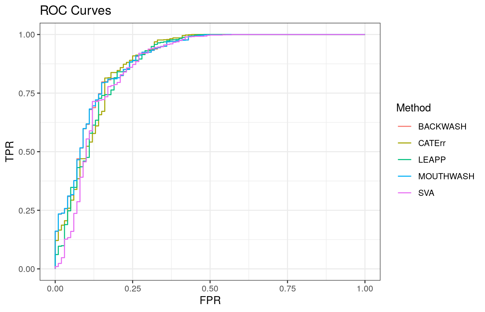

In this vignette, I take an example simulated RNA-seq dataset and analyze it using the functions in the vicar R package. I compare their performances against the methods available in other packages.
The data are simulated RNA-seq expression data based on the characteristics of the GTEx data: . The overall model for these data is \[
Y = X\beta + Z\alpha + E,
\] where \(Y\) contains the gene expression levels, \(X\) contains the observed covariates, \(\beta\) contains the coefficients of the observed covariates, \(Z\) contains the unobserved confounders, \(\alpha\) contains the coefficients of the unobserved confounders, and \(E\) contains independent Gaussian noise with column-specific variances. The data, sim_gtex consists of a list of elements:
Y A matrix of gene expression levels. The rows index the samples and the columns index the genes.X A matrix of covariates. The first column is simply for an intercept term and the second column is a group indicator.beta The known signal for the group indicator.ctl A logical vector indicating the location of control genes.which_null A logical vector indicating the location of null genes.I’ve added signal to the Y matrix, the amount of which is encoded in the vector beta. We can read in these data using the data function.
##
## Attaching package: 'dplyr'## The following objects are masked from 'package:stats':
##
## filter, lag## The following objects are masked from 'package:base':
##
## intersect, setdiff, setequal, uniondata(sim_gtex)
Y <- sim_gtex$Y
X <- sim_gtex$X
ctl <- sim_gtex$ctl
which_null <- sim_gtex$which_null
beta <- sim_gtex$betaThese data contain 20 samples and 1000 genes. The proportion of genes in these data that are null is 0.9. However, we only allow 10 of these genes to be known as negative controls.
Before we proceed with the analysis, we note that all confounder adjustment methods we explore require an estimate of the number of hidden confounders. We can use the num.sv function in the sva package, or the est.confounder.num function in the cate package to obtain this estimate. They each say that there are about 3 or 4 hidden confounders.
num_sv <- sva::num.sv(dat = t(Y), mod = X, method = "be")
num_sv_l <- sva::num.sv(dat = t(Y), mod = X, method = "leek")
num_sv_bcv <- cate::est.confounder.num(~ Intercept + Treatment, X.data = as.data.frame(X), Y = Y,
method = "bcv", bcv.plot = FALSE, nRepeat = 50)$r
num_sv## [1] 3num_sv_l## [1] 5num_sv_bcv## [1] 3For this vignette, we’ll use the output from num.sv, which indicates that there are 3 hidden confounders.
When there are control genes, there are many options to analyze your data. vicar, cate, and ruv all have their different versions of RUV4. We’ll just look at the default settings for each.
ruv4_vicar <- vicar::vruv4(Y = Y, X = X, k = num_sv, ctl = ctl, cov_of_interest = 2)
ruv4_cate <- cate::cate.fit(X.primary = X[, 2, drop = FALSE], X.nuis = X[, -2, drop = FALSE],
Y = Y, r = num_sv, adj.method = "nc", nc = ctl)
ruv4_ruv <- ruv::RUV4(Y = Y, X = X[, 2, drop = FALSE], ctl = ctl, k = num_sv,
Z = X[, -2, drop = FALSE])The ruv package also implements the RUV2 method.
ruv2_ruv <- ruv::RUV2(Y = Y, X = X[, 2, drop = FALSE], ctl = ctl, k = num_sv,
Z = X[, -2, drop = FALSE])A method that is both a version of RUV2 and a version of RUV4 is implemented in the vicar function ruv3.
ruv3_vicar <- ruv3(Y = Y, X = X, k = num_sv, ctl = ctl, cov_of_interest = 2)Finally, a Bayesian version of RUV is implemented in the vicar function ruvb. I run the Gibbs sampler for much fewer iterations than what you should do in practice.
When control genes are not present, there are still plenty of options. Two implementations in vicar are mouthwash and backwash.
mout <- mouthwash(Y = Y, X = X, k = num_sv, cov_of_interest = 2, include_intercept = FALSE)## Running mouthwash on 20 x 2 matrix X and 20 x 1000 matrix Y.
## - Computing independent basis using QR decomposition.
## - Computation took 0.009 seconds.
## - Running additional preprocessing steps.
## - Computation took 0.001 seconds.
## - Running second step of mouthwash:
## + Estimating model parameters using EM.
## + Computation took 5.491 seconds.
## + Generating adaptive shrinkage (ash) output.## Due to absence of package REBayes, switching to EM algorithm## + Computation took 0.166 seconds.
## - Second step took 6.085 seconds.
## - Estimating additional hidden confounders.
## - Computation took 0.012 seconds.bout <- backwash(Y = Y, X = X, k = num_sv, cov_of_interest = 2, include_intercept = FALSE)## - Computing independent basis using QR decomposition.
## - Computation took 0.008 seconds.
## - Running additional preprocessing steps.
## - Computation took 0.001 seconds.
## - Running second step of backwash:
## + Initializing parameters for EM algorithm.## Due to absence of package REBayes, switching to EM algorithm## + Computation took 0.406 seconds.
## + Running one round of parameter updates.
## + Computation took 0.029 seconds.
## + Estimating model parameters using EM.
## + Computation took 18.584 seconds.
## + Generating posterior statistics.
## + Computation took 0.006 seconds.
## - Second step took 19.928 seconds.
## - Generating final backwash outputs.
## - Computation took 0.019 seconds.In terms of other packages, you can use the sva function in the sva package, the cate function in the cate package, or the leapp function in the leapp package.
cate_cate <- cate::cate.fit(X.primary = X[, 2, drop = FALSE], X.nuis = X[, -2, drop = FALSE],
Y = Y, r = num_sv, adj.method = "rr")
leapp_leapp <- leapp::leapp(data = t(Y), pred.prim = X[, 2, drop = FALSE],
pred.covar = X[, -2, drop = FALSE], num.fac = num_sv)
## Recommended pipeline for SVA
sva_sva <- sva::sva(dat = t(Y), mod = X, mod0 = X[, -2, drop = FALSE], n.sv = num_sv)## Number of significant surrogate variables is: 3
## Iteration (out of 5 ):1 2 3 4 5X.sva <- cbind(X, sva_sva$sv)
lmout <- limma::lmFit(object = t(Y), design = X.sva)
eout <- limma::ebayes(lmout)## Warning: 'limma::ebayes' is deprecated.
## Use 'eBayes' instead.
## See help("Deprecated")We’ll compare how all of the methods performed on these data using the pROC package.
roc_out <- list(
pROC::roc(response = which_null, predictor = c(mout$result$lfdr)),
pROC::roc(response = which_null, predictor = c(bout$result$lfdr)),
pROC::roc(response = which_null, predictor = c(cate_cate$beta.p.value)),
pROC::roc(response = which_null, predictor = c(svaout$pvalues)),
pROC::roc(response = which_null, predictor = c(leapp_leapp$p)),
pROC::roc(response = which_null, predictor = c(ruv2_ruv$p)),
pROC::roc(response = which_null, predictor = c(ruv3_vicar$pvalues_unadjusted)),
pROC::roc(response = which_null, predictor = c(ruv4_vicar$pvalues)),
pROC::roc(response = which_null, predictor = c(ruv4_cate$beta.p.value)),
pROC::roc(response = which_null, predictor = c(ruv4_ruv$p)),
pROC::roc(response = which_null, predictor = c(ruvb_vicar$lfsr2)))
name_vec <- c("MOUTHWASH", "BACKWASH", "CATErr", "SVA", "LEAPP", "RUV2", "RUV3", "RUV4v", "RUV4c", "RUV4r", "RUVb")
names(roc_out) <- name_vec
sout <- lapply(roc_out, function(x) { data.frame(TPR = x$sensitivities, FPR = 1 - x$specificities)})
for (index in 1:length(sout)) {
sout[[index]]$Method <- name_vec[index]
}
longdat <- do.call(rbind, sout)We’ll first look at the ROC Curves for the methods that use control genes.
shortdat <- dplyr::filter(longdat, Method == "RUV2" | Method == "RUV3" | Method == "RUV4v" |
Method == "RUV4c" | Method == "RUV4r" | Method == "RUVb")
ggplot(data = shortdat, mapping = aes(x = FPR, y = TPR, col = Method)) +
geom_path() + theme_bw() + ggtitle("ROC Curves")
Eyeballing it, it seems that RUV3 and RUV2 perform the best here, though not with regards to the most significant genes. The ruv version of RUV4 appears to do much worse.
Now we’ll look at the ROC curves of methods that do not use control genes.
shortdat <- dplyr::filter(longdat, Method == "MOUTHWASH" | Method == "BACKWASH" |
Method == "CATErr" | Method == "SVA" | Method == "LEAPP")
ggplot(data = shortdat, mapping = aes(x = FPR, y = TPR, col = Method)) +
geom_path() + theme_bw() + ggtitle("ROC Curves")
Eyeballing it, it seems that MOUTHWASH and BACKWASH do the best over the largest length of the curve. Note that the BACKWASH curve is nearly completely covered by the MOUTHWASH curve.
We can calculate the areas under the curve (AUC) for each method
auc_vec <- sapply(roc_out, FUN = function(x) { x$auc })
knitr::kable(sort(auc_vec, decreasing = TRUE), col.names = "AUC", digits = 3)| AUC | |
|---|---|
| MOUTHWASH | 0.892 |
| BACKWASH | 0.891 |
| RUV3 | 0.885 |
| CATErr | 0.884 |
| RUV2 | 0.884 |
| LEAPP | 0.879 |
| RUVb | 0.875 |
| SVA | 0.871 |
| RUV4v | 0.859 |
| RUV4c | 0.856 |
| RUV4r | 0.816 |
It is sometimes of interest to estimate the number of genes that show a signal. mouthwash and backwash already return these estimates. For other methods, we can use a summary statistic method (SSM) to get estimates of the proportion of genes that are null. Two useful SSM’s are implemented in the ashr and qvalue R packages. We’ll look at using the ashr package.
method_list <- list()
method_list$CATErr <- list()
method_list$CATErr$betahat <- c(cate_cate$beta)
method_list$CATErr$sebetahat <- c(sqrt(cate_cate$beta.cov.row * cate_cate$beta.cov.col) / sqrt(nrow(X)))## Warning in cate_cate$beta.cov.row * cate_cate$beta.cov.col: Recycling array of length 1 in vector-array arithmetic is deprecated.
## Use c() or as.vector() instead.method_list$RUV2 <- list()
method_list$RUV2$betahat <- c(ruv2_ruv$betahat)
method_list$RUV2$sebetahat <- c(sqrt(ruv2_ruv$multiplier * ruv2_ruv$sigma2))## Warning in ruv2_ruv$multiplier * ruv2_ruv$sigma2: Recycling array of length 1 in array-vector arithmetic is deprecated.
## Use c() or as.vector() instead.method_list$RUV3 <- list()
method_list$RUV3$betahat <- c(ruv3_vicar$betahat)
method_list$RUV3$sebetahat <- c(ruv3_vicar$sebetahat_unadjusted)
method_list$RUV4r <- list()
method_list$RUV4r$betahat <- c(ruv4_ruv$betahat)
method_list$RUV4r$sebetahat <- c(sqrt(ruv4_ruv$multiplier * ruv4_ruv$sigma2))## Warning in ruv4_ruv$multiplier * ruv4_ruv$sigma2: Recycling array of length 1 in array-vector arithmetic is deprecated.
## Use c() or as.vector() instead.method_list$RUV4v <- list()
method_list$RUV4v$betahat <- c(ruv4_vicar$betahat)
method_list$RUV4v$sebetahat <- c(ruv4_vicar$sebetahat_ols)
method_list$RUV4c <- list()
method_list$RUV4c$betahat <- c(ruv4_cate$beta)
method_list$RUV4c$sebetahat <- c(sqrt(ruv4_cate$beta.cov.row * ruv4_cate$beta.cov.col) / sqrt(nrow(X)))## Warning in ruv4_cate$beta.cov.row * ruv4_cate$beta.cov.col: Recycling array of length 1 in vector-array arithmetic is deprecated.
## Use c() or as.vector() instead.method_list$RUVb <- list()
method_list$RUVb$betahat <- c(ruvb_vicar$means)
method_list$RUVb$sebetahat <- c(ruvb_vicar$sd)
method_list$SVA <- list()
method_list$SVA$betahat <- c(svaout$betahat)
method_list$SVA$sebetahat <- c(svaout$sebetahat)
ashfit <- lapply(method_list, FUN = function(x) { ashr::ash(x$betahat, x$sebetahat)})## Due to absence of package REBayes, switching to EM algorithm
## Due to absence of package REBayes, switching to EM algorithm
## Due to absence of package REBayes, switching to EM algorithm
## Due to absence of package REBayes, switching to EM algorithm
## Due to absence of package REBayes, switching to EM algorithm
## Due to absence of package REBayes, switching to EM algorithm
## Due to absence of package REBayes, switching to EM algorithm
## Due to absence of package REBayes, switching to EM algorithmapi0 <- sapply(ashfit, FUN = ashr::get_pi0)
api0 <- c(api0, MOUTHWASH = mout$pi0)
api0 <- c(api0, BACKWASH = bout$pi0)In these data, at least, MOUTHWASH, BACKWASH, and SVA have by far the most accurate estimates of the proportion of genes that are null (\(\pi_0\)), which, recall, is 0.9.
| Estimate of Pi0 | |
|---|---|
| RUV2 | 0.9383859 |
| RUV3 | 0.9351290 |
| RUVb | 0.9215029 |
| SVA | 0.9072704 |
| BACKWASH | 0.8968591 |
| MOUTHWASH | 0.8943147 |
| RUV4v | 0.7292451 |
| CATErr | 0.7013801 |
| RUV4c | 0.6990074 |
| RUV4r | 0.3923457 |